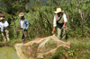
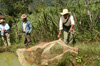

Sustainable Agriculture Program
FUNDAMARCOS-Baja Verapaz
Guatemala
Program Accomplishments in 2010
Organic fertilization
- A survey of the communities of Hierba Buena, Llano Santa Rosa, and Sacaquej which measured the acceptance and continued use of practices taught by FUNDAMARCOS found that 70% of all the farmers in these communities are using the crop residue from their corn and bean crops, combined with manure, to organically fertilize their fields. These farmers are also continuing to plant more grass barriers which serve to prevent soil erosion and are used for animal folder. These communities had received instruction from 2 to 5 years and the survey included everyone, whether or not they had attended classes. It was obvious many farmers were copying the program's recommendations from their neighbors.
- 115 new families began using organic fertilizer based on cow or chicken manure.
- 172 families received training and a starter group of worms to begin their own vermiculture (worm culture).
- 40 families are now producing and using worm produced fertilizer on crops, with especially great results in vegetable gardens.
Soil Conservation and Water Management
- 287 families began implementing or expanded their use of soil conservation and water management practices.
- The soil conservation and water management techniques that had been implemented in past years were proven extremely effective during incredible rains of Tropical Storm Agatha on May 29th and 30th, 2010. (See photos and a description of the damage caused by this storm by visiting our project: Protecting the Río Montagua.)
Reforestation and Agroforestry
- Many participants have small tree nurseries with 800 to 3,350 plants each - trees for firewood, reforestation and lumber, plus coffee and fruit trees to provide a cash crop.
- 23,540 trees produced in these local nurseries were planted for reforestation in 2010.
- Farmers are starting to use a local variety of cypress for live fence posts. Local people had identified the regular cutting of small trees for fence posts as a major threat to both individually owned and communal forested areas.
- The program has 5 new large nurseries (22,500 plants) experimenting with new tree varieties suitable for higher altitudes of the program area. The seeds were provided by Trees for the Future, an NGO with whom EPIC has had strong collaboration in Honduras.
{kind=link}
{kind=link}
{kind=link}
{kind=link}
{kind=link}
 

{kind=link}
Cash Crops
- 20 groups or individual farmers in 10 villages are growing oyster mushrooms as a high value cash crop. Production is good, but marketing the mushrooms needs work and this will delay starting instruction for the 15 new groups asking for it. Meanwhile, better known vegetables sell very well.
- Several farmers in each community have started very small dairies with 2 to 5 cows, and their families are now selling cheese. Many farmers are planting improved fodder, and there is strong interest in livestock improvement.
Leadership Training
- 33 persons from 6 communities are being trained as promoters. In July this group began receiving monthly courses of 2 to 3 days each. After New Years these very popular courses will continue through the spring of 2011, with the training finishing by planting season, approximately at the end of May.
Read more about how FUNDAMARCOS promotes successful, sustainable agriculture